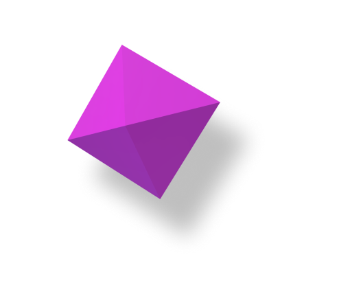
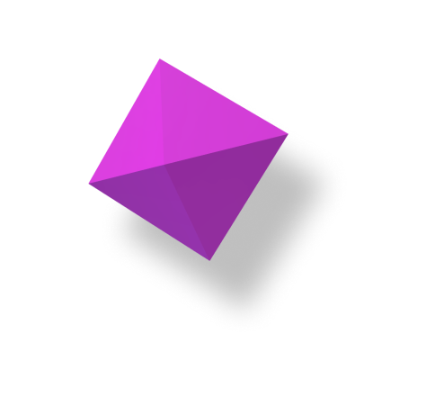

Python Backend-Developer
I write code in the Python programming language.
I am developing a backend using the Django framework and gradually entering the backend development industry.
About me >


I write code in the Python programming language.
I am developing a backend using the Django framework and gradually entering the backend development industry.
 


Backend-Developer / Python-fan / Teacher (temporary) =)
I write code in Python and developing a backend using the Django framework. I am gradually entering this industry.
A fan of miniatures, outdoor activities, video games and, of course, programming.
I am interested in the whole spectrum of the backend and want to work on ambitious projects with interesting people.
The main area of my work is backend development (server side of the web)
Pycharm and Django is helping me to create systems for my work. I also have to know all the related technologies that are often used in development.